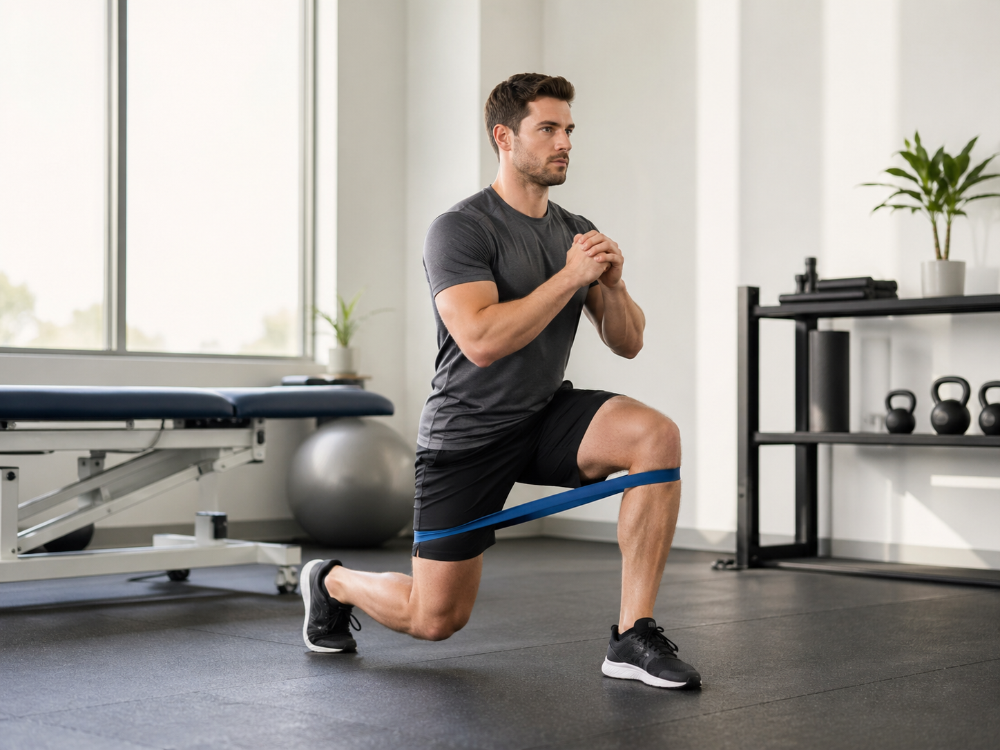
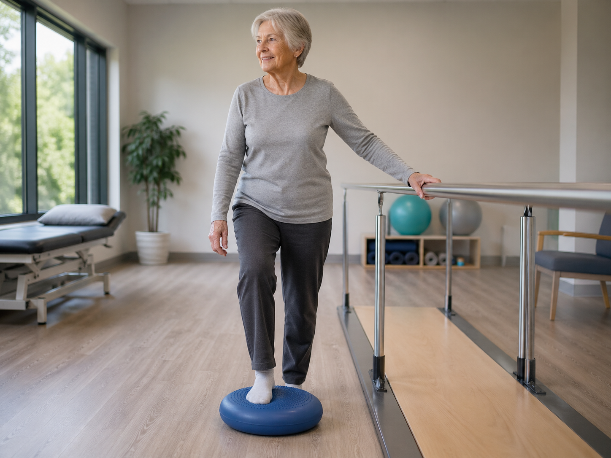

Professional, personalised physiotherapy in the comfort of your own home. Whether you're recovering from surgery, managing chronic pain, or improving mobility — I come to you.
Patients Treated
Years Experience
Patient Rating
Treatment at your door
Trusted by hundreds
Skip the waiting rooms and travel time. Home-based physiotherapy offers a more relaxed, personalised approach to your recovery.
Recover in the environment where you're most relaxed. No stressful travel or waiting rooms.
Every session is one-on-one, with exercises designed around your home environment and daily activities.
Appointments that fit your life. Early mornings, evenings, and weekends available.
Evidence-based treatment plans built on the latest research and clinical best practice.
From sports injuries to post-operative rehabilitation, I provide expert care across a range of conditions.

Expert assessment and treatment for joint pain, muscle injuries, and sports-related conditions.
Learn More →
Helping older adults maintain independence through mobility, strength, and balance programmes.
Learn More →Structured rehabilitation following hip & knee replacements, ACL repairs, and other surgeries.
Learn More →Four easy steps to begin your recovery journey from the comfort of home.
Call, email, or book online. Tell me about your condition and what you'd like to achieve.
I visit your home for a thorough assessment, understanding your goals and creating a plan.
Hands-on treatment combined with tailored exercises, all in your own space.
Regular reviews and adapted programmes to keep you progressing toward full recovery.
Hear from people who've experienced the difference that home-based physiotherapy can make.
Josh was brilliant from start to finish. After my knee replacement, having physio at home made all the difference. He's thorough, professional, and really knows his stuff.
I tore my hamstring playing football and Josh had me back on the pitch faster than I expected. The home visits meant I didn't miss work for appointments either.
My mum was struggling with her balance and confidence after a fall. Josh created a gentle programme that's transformed her independence. We can't thank him enough.